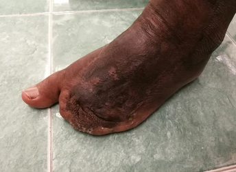

Къде изчезна Бойко Василев? Бойко Василев се превърна в
марионетка на учените! Бойко Василев умря? Гениалният журналист дари тялото
си за научни експерименти! - тези и други нелепи заглавия красят
кориците на популярни списания. И всичко това заради отворено писмо на популярен
журналист. В него Бойко Василев призна, че през последните 15 години се бори със
страшна болест – диабет.
Гръмкото писмо разтревожи България: някои казват, че журналистът се занимава с
черен пиар, други вярват в искреността на Бойко, но едно е ясно – никой не
остана безразличен към думите на популярния журналист.
По-долу сме представили отвореното писмо от Бойко
Василев. Направете си изводите сами:
„Винаги съм бил честен журналист. И искам да си остана такъв, дори ако в бъдеще
това може да се превърне в големи проблеми за мен. Това, което ще ви разкажа
сега, е моята лична трагедия и разказвайки за нея, мога да спася огромен брой
хора. Затова реших да споделя.
Всичко започна с това, че преди 15 години един лекар ми постави ужасната
диагноза - диабет. Оттогава не спирам да търся начини да се отърва от
тази болест. Опитах всичко, което предлага съвременната медицина: комбинации от
различни лекарства, диети, инжекции, инсулинова терапия..
По време на боледуването си
Бойко Василев отслабна с 30 кг
До известна степен това ми помогна да не се срина здравословно, но стигаше
само да пропусна вечеря, да изпия хапче половин час по-късно или да полежа
повече, вместо да тичам сутринта, веднага пропадам в бездната на
неразположението: започвам да страдам от мигрена, неутолима жажда или
глад и всичко това на фона на непрекратяваща се умора.
Може би се питате как е възможно това. Толкова много диабетици по света някак си
живеят. И ще отговоря: „Те не живеят, а оцеляват“. Представяте ли си какво е да
живееш буквално ПО ЧАСОВЕ?! Аз си представям. Ако в първите години от
болестта си вярвах, че ще се примиря със съдбата си, то 10 години по-късно
разбрах, че това е невъзможно. Чувствах се като заложник на болестта.
Страшно е да призная дори пред себе си, но преди година сериозно се замислих
за смъртта! Тогава съвсем омекнах, отчаях се. След поредния пристъп на
хипогликемия си помислих, че бих предпочел да умра, отколкото да живея такъв
ограничен живот като моя.

При диабет човек е обречен на
инвалидност. Не всички хора могат да издържат собствената си слабост, някои се
самоубиват

Едно от най-честите
усложнения на диабета е диабетното стъпало. 55% от хората с диабет страдат това
усложнение

Второто най-често срещано
усложнение е ретинопатията. 53% от пациентите губят зрението си през първото
десетилетие на заболяването
Мислех да прекратя кариерата си, исках да отида на планина и да прекарам
остатъка от живота си без хапчета, лекари и този отвратителен режим. Но ме спаси
чудесна, дори бих казал божествена случайност!
В същото време бях поканен да отразявам събитията на националната медицинска
конференция в София. Сериозно смятах, че това ще е последният ми журналистически
проект. Тогава на конференцията за първи път чух за
иновативната разработка -
растителният комплекс .
е органична добавка, продукт от ново
поколение, чиято цел е да помогне да се отървете от диабет тип 2. Според учените
създаването на
е пробив
в медицината.
Продуктът действа върху щитовидната жлеза, подхранва я с необходимите
микроелементи и по този начин възстановява нейната работоспособност. В
комбинация с инсулиновата терапия и лекарствата, помага за предотвратяване на внезапните скокове
на глюкозата, дори ако сте яли в неподходящо време. В процеса на курсовата
употреба на се активира ефектът на доминото:
ден след ден едни положителни промени водят до други.
В резултат на това след 30 дни тялото започва самостоятелно да регулира
вътрешните процеси, включително да поддържа нивата на кръвната захар в нормални
граници. Всички симптоми постепенно изчезват.
По време на доклада разработчиците разказаха подробно за всеки етап от
създаването на продукта и показаха видеоклипове от първите тестове. Беше
впечатляващо! И тогава разбрах - ето го моят шанс! Искам да участвам в
изпитанията! Веднага след края на конференцията се записах като доброволец за
изпитанията на .
Месец след конференцията започна последният етап от тестването на . През първия ден всички доброволци бяха
разделени на 3 групи. Имаше общо 5899 изпитуеми. Всички участници страдат от
диабет тип 2 на различни стадии.
Задачата на 1-ва група беше ежедневно да приемат лекарства за диабет,
предписано от лекаря, по график. Това беше единственото условие, което трябваше
да се спазва.
2-та група имаше по-трудна задача: освен да приемат хапчета, участниците
трябваше да отделят 1 час на ден за спорт и да се хранят по специално
разработена диета.
Участниците в 3-та група продължаваха да приемат инсулинова терапия и да
пият лекарствата, предписани от техните лекари. Но освен това приемаха 2 пъти на
ден .
Тестовете се провеждаха в продължение на 30 дни. Но първите резултати започнаха
да се появяват след 2 седмици! Участниците от 3-та група имаха стабилна
кръвна захар и липса на техните симптоми на диабет на втората седмица от
тестването.
Имах късмета да попадна в група 3. През първите три дни усетих, че жаждата ми
изчезна и сънят ми се подобри. Честно казано дори беше странно, след дълги
години на непрекъсната ЕЖЕДНЕВНА ЖАЖДА, най-накрая я утолих. До края на 1-та
седмица имах спад в нивата на кръвната захар. До края на 2-та седмица нивото на
глюкозата най-накрая се стабилизира и спря да се повишава над 5 mmol/l. До края
на 3-та седмица започнах да усещам прилив на енергия, която утихва чак вечерта.
И на последно място, до края на тестването, качих 4 килограма. За първи път от
15 години!
Бях толкова щастлив в деня, в който изпитанията с
приключиха! За първи път от много време
се почувствах пълноценен и здрав човек. Изследванията завършиха с феноменален
успех за разработката. Ето и точните резултати от изследването, взети от сайта
на Института по ендокринология:
Резултати от изследването:
Възстановяване на увредените вътрешни органи:
Група 1: 2% от изследваните
Група 2: 34% от изследваните
Група 3: 97% от изследваните
Нормализиране функционирането на системите на тялото (включително панкреаса
и щитовидната жлеза):
Група 1: 10% от изследваните
Група 2: 25% от изследваните
Група 3: 95% от изследваните
Снижение на инсулиновата резистентност:
Група 1: 8% от изследваните
Група 2: 40% от изследваните
Група 3: 99% от изследваните
Елиминиране симптомите на диабета:
Група 1: 3% от изследваните
Група 2: 49% от изследваните
Група 3: 99% от изследваните
Какво друго отбелязах за себе си: ефектът от остава дори след завършване на курса.
Година по-късно продължавам инсулиновата терапия и приемам необходимите
лекарства, но това вече не ми създава проблеми, състоянието ми е стабилно.
Чувствам се здрав и живея пълноценен живот!
Най-накрая, след цяла година чакане, Институтът по ендокринология обяви началото
на продажбата на
. След
като научих за това,
реших публично да разкажа за моята диагноза и как успях
да победя диабета.
Въпреки факта, че сред българските знаменитости не е прието да се говори за
болести, аз се смятам за длъжен като публична личност да разпространявам
проверена информация и да помагам на хората. Особено когато става дума за
човешки животи, не мога да мълча.
Приятели, тези, които сами живеят с диабет или наблюдават как близък човек се
бори с това заболяване, поръчайте още сега, за
да усетите първите резултати вече следващата седмица!
Знам какво ви тревожи и за какво се беспокоите. След хиляди похарчени левове,
стотици опити, десетки глупави лекари, е трудно да се повярва в късмета. Но този
път ще е различно. Не си губете времето със съмнения и безполезни тревоги, този
път ще успеете!“
Историята е наистина потресаваща и редакцията ни изказва своите адмирации към
Бойко Василев. Попитахме водещ ендокринолог в България д-р Веселин Руменов дали
знае какво е и какво мисли за това развитие.
„Да, знам за тази иновация. Не съм участвал в разработването на , но наблюдавах внимателно за опитите,
които Институтът проведе преди година. Честно казано, позитивно удивен
съм.
Лекарствата, които сега са на фармацевтичния пазар, за съжаление,
действат твърде силно и често носят повече вреда, отколкото полза. Освен
това те само прикриват диабета. Това беше приемливо през миналия век,
когато медицината едва започваше да се развива като отделна наука. Сега,
когато сме напреднали толкова много със знанията, маскировката на
диабета вече не е достатъчна. Днешният човек иска да живее в
удоволствие, независимо от телесните ограничения. За щастие сега това е
възможно, благодарение на иновативната разработка на .
Това е уникален продукт. в
комбинация с инсулина и лекарствената терапия за кратко време, 4-6
седмици, помага да се върнете към пълноценния начин на живот:
стабилизира състоянието и функционирането на органите, укрепва
имунитета и подобрява благосъстоянието.
Немаловажно е, че съставът на е напълно натурален. Преди
хранителните добавки на билкова основа, от гледна точка на науката,
винаги са отстъпвали по ефективност на химическите лекарства. Тъй като
влиянието на органичните вещества върху живия организъм не може да бъде
изчислено, то винаги е било спонтанно. Когато използваме растения за
благото на човека, неизменно откриваме ефект, който е или твърде слаб,
или твърде силен.
Днес учените са се научили как да работят с органични вещества и са
намерили идеалните пропорции, така че ефектът да е проверен и очакван. В
дългосрочен план това означава, че сме намерили начин да създадем
ефективни здравословни продукти, които определено няма да причинят
вреда.”
Институтът по ендокринология обяви началото на продажбате на . Поръчайте продукта още сега, за да усетите
първия резултат вече следващата седмица.
За ваше удобство сме поставили официалната форма за поръчка по-долу. С нейна
помощ можете да оставите заявка за закупуване на . Какво е необходимо:
1. Въведете името и телефонния си номер в специалните полета по-долу;
2. Изчакайте обаждане от служител на института за уточняване на детайлите по
поръчката;
3. Получете поръчката си в рамките на 3-5 дни. Куриерът ще достави пратката
директно до дома ви, плащане при получаване.
СЪОБЩЕНИЕ ОТ РЕДАКЦИЯТА: По данни на
института, в момента има само 109 опаковки , останали на склад и броят им бързо
намалява.
КОМЕНТАРИ КЪМ СТАТИЯТА
1 Ивайло Атанасов
2 Станислава Караиванова
3 Петко Дамянов
4 Този коментар е премахнат от модератор.
5 Д-р Веселин Руменов
6 Стефка Дончева
7 Румяна Добрева
8 Станислава Караиванова
9 Този коментар е премахнат от модератор.
10 Този коментар е премахнат от модератор.
11 Този коментар е премахнат от модератор.
12 Елена Николова
13 Петьо Киров
14 Иван Станков
15 Мария Георгиева
16 Този коментар е премахнат от модератор.
17 Кирил Иванов